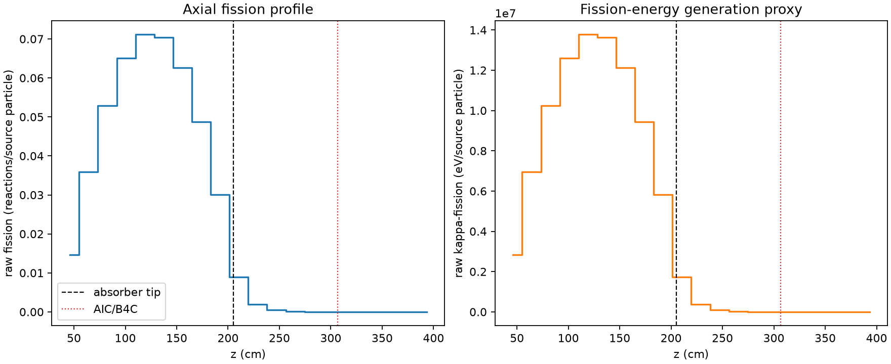
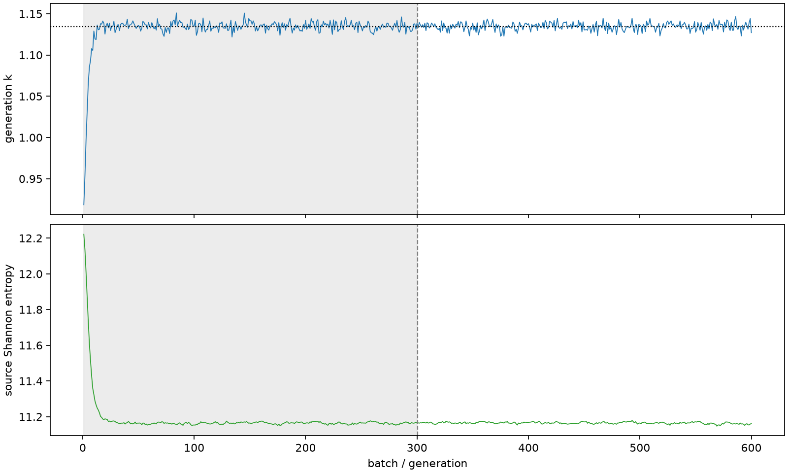

| field | value |
|---|---|
| experiment | V2-STAGE_128_OGRENCI_01-0017 |
| k | 1.134542914400132 |
| MC standard error | 0.00018375314302679515 |
| seconds | 988.5076032579964 |
| acceptance | not_assessed |
| convergence | review_required |
Completed is output integrity only; physical and statistical review required. Zero tallies do not prove zero production or zero uncertainty.
| diagnostic | value |
|---|---|
| geometric fuel voxels | 5280 |
| zero fission tally voxels | 955 |
| low signal fuel voxels | 1846 |
| low signal fission share | 8.044608979078686e-05 |
| low signal kappa share | 8.047469301853197e-05 |
| important fission share | 0.9500100125452018 |
| previous filter included | 3434 |
| duration estimate s | 1562.5173488400023 |
| actual minus estimate s | -574.009745582006 |
| fission relative MC error | statistics |
|---|---|
| all_geometric_fuel | {"voxels": 5280, "positive_mean_voxels": 4325, "zero_mean_voxels": 955, "undefined_relative_error_voxels": 955, "median": 0.012698652550901622, "p95": 0.7938165208756695, "maximum": 1.0000000000000002} |
| low_signal | {"voxels": 1846, "positive_mean_voxels": 891, "zero_mean_voxels": 955, "undefined_relative_error_voxels": 955, "median": 0.531666423733937, "p95": 1.0, "maximum": 1.0000000000000002} |
| important_95pct | {"voxels": 2163, "positive_mean_voxels": 2163, "zero_mean_voxels": 0, "undefined_relative_error_voxels": 0, "median": 0.006876356694826877, "p95": 0.009915722985134092, "maximum": 0.014851475833360711} |
| outside_previous_filter | {"voxels": 1846, "positive_mean_voxels": 891, "zero_mean_voxels": 955, "undefined_relative_error_voxels": 955, "median": 0.531666423733937, "p95": 1.0, "maximum": 1.0000000000000002} |
| kappa_fission relative MC error | statistics |
|---|---|
| all_geometric_fuel | {"voxels": 5280, "positive_mean_voxels": 4325, "zero_mean_voxels": 955, "undefined_relative_error_voxels": 955, "median": 0.012682227335527332, "p95": 0.7937173735597142, "maximum": 1.0000000000000002} |
| low_signal | {"voxels": 1846, "positive_mean_voxels": 891, "zero_mean_voxels": 955, "undefined_relative_error_voxels": 955, "median": 0.5301752357196714, "p95": 1.0, "maximum": 1.0000000000000002} |
| important_95pct | {"voxels": 2163, "positive_mean_voxels": 2163, "zero_mean_voxels": 0, "undefined_relative_error_voxels": 0, "median": 0.00686831617904141, "p95": 0.009903459370818206, "maximum": 0.01483211140159612} |
| outside_previous_filter | {"voxels": 1846, "positive_mean_voxels": 891, "zero_mean_voxels": 955, "undefined_relative_error_voxels": 955, "median": 0.5301752357196714, "p95": 1.0, "maximum": 1.0000000000000002} |
| axial bin | fission share | kappa-fission share |
|---|---|---|
| 1 | 0.03165652779844816 | 0.03165779875308497 |
| 2 | 0.07762844988869275 | 0.07762797858167704 |
| 3 | 0.1143028691357401 | 0.11430193530261716 |
| 4 | 0.14049842627163234 | 0.14049731012109554 |
| 5 | 0.1536036087253586 | 0.153602339437658 |
| 6 | 0.15205745842987967 | 0.15205608112279845 |
| 7 | 0.13521984743131832 | 0.1352189275818359 |
| 8 | 0.10531118426020053 | 0.10531013512774429 |
| 9 | 0.06502705917102287 | 0.06502668004782583 |
| 10 | 0.019236938443645338 | 0.019241109140108164 |
| 11 | 0.004119144189515942 | 0.004120679171009664 |
| 12 | 0.001011565853585131 | 0.0010119702085156705 |
| 13 | 0.0002478840490415877 | 0.0002479908950972482 |
| 14 | 6.351441590613348e-05 | 6.353380554417604e-05 |
| 15 | 1.2243678383688477e-05 | 1.225183620863385e-05 |
| 16 | 2.952609010210266e-06 | 2.9531670025309557e-06 |
| 17 | 3.1918002759430576e-07 | 3.191442628797433e-07 |
| 18 | 6.468591017222727e-09 | 6.5559138366206745e-09 |
| 19 | 0.0 | 0.0 |
| 20 | 0.0 | 0.0 |
Histories include the inactive-to-active transition at batch 300. kappa-fission approximates fission energy production, not total heat deposition.

